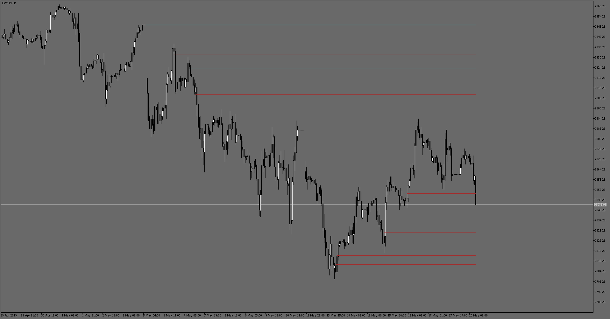

Today we are gonna talk about what supply and demand is in financial markets, how to use that as strategy and how to code an trading algorytm Supply/Demand is a core of whole economy. Nowadays, it can be visualized and used as a trading technique.
Usually price will drop after a period of consolidation like on the ares marked by solid areas. We assume that not all sellers got filled and there is still interest in that level. Lets go over few components of valid supply zone:
